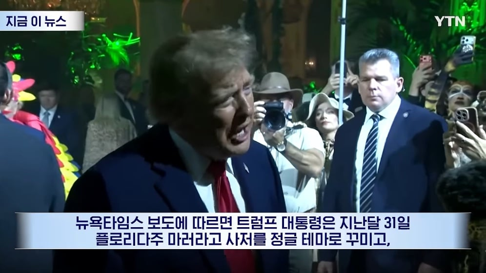
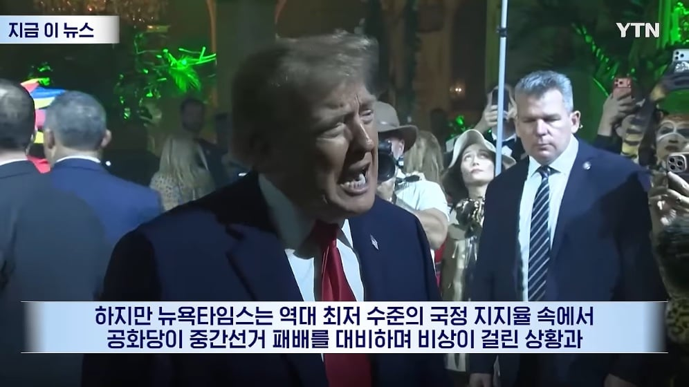

나라가 지금보다 잘된 적이 없어 기분이 매우 좋다고 함
참고: 🇺🇸 믿었던 트럼프가 발등 찍었다…'부글부글' 개열받은 공화당 지지자들이 이번 선거의 변수 😡


나라가 지금보다 잘된 적이 없어 기분이 매우 좋다고 함
선거 끝은 커녕 아직 시작도 안했는데?
중국 공산당을 공화당이라고 잘못적은거니?
아님 다른나라 공화당인가?
사전투표 결과가 거의 반반인데
사전투표 참가자가 민주당이 많다는 카더라긴함
사전투표결과 안나옴
민주당이 이기면 부정선거기 때문에 공화당이 이긴게 맞다
너씨천?
어차피 민주당이 이기면 부정선거가 될거라서
공화당이 이겨도 140% 아니면 부정선거라고 입털듯
어디서 이김?
ㅇㄱㄹㅇ ㅂㅂㅂㄱ 이 댓글은 성지가 된다
선거 지고 부정선거 운운하면서 계엄때리고 내전하는것꺼지가 템플릿임
짐이 국가이다.
내가 돈 ㅈㄹ 벌었으니 다 잘된거임 ㅅㄱ.
근데 또 대선등에서 언론이 트럼프 망했다고 하지만 실제로는 이긴케이스들이 있으니 끝까지 봐야하지 않을까 싶어
애초에 과거 대선때도 힐러리가 이미 이겼을꺼라고 예측하고 당선기념 자서전 인쇄까지도 한 상황이였지 ㅋㅋㅋㅋㅋㅋㅋㅋ
맞음. 요즘 유튜브도 민주당이 이겼거나 우세라고하는데 저번에도 그런소리하다가 져서 믿음이 안감. 특히 공중파 뉴스같은 경우는 친민주쪽 언론기사만 가져다 알려주는 경우가 많아서 더더욱
당연히 민주당이 쳐발라야 되는 게 정상 아닌가 싶다가도
지난 대선 때 국내 언론 근들갑 떨어댄 거 생각하면 이번엔 그냥 팝콘만 까고 기다리는 게 맞는 거 같긴 한데
시발 트럼프 대통령 되고 지금까지 미국 조지는 걸 실시간으로 본 미국 사람들이 또 공화당을 선택한다면
그건 그거대로 문제일 거 같고 ㅋㅋㅋㅋ
민주당이 힘을 얻는다해서
미국이 다시 위대해지는진 모르겠지만
실시간으로 미국을 병신만들고 있는데
그래도 지지하는 사람들이 많으면
미국은 망한게 맞을듯 ㅋㅋㅋ
대선 후보로 낼 사람이 없어서 오카시오 코르테스나 다시 카밀라 해리스 카드 만지작거리는
지금 민주당도 존나 븅신같긴 한데 지금의 트럼프를 보고도 공화당을 선택한다면 그건 진짜...
아직도 정신 못차린듯 해리스를 못버린거면 ㅋㅋㅋㅋ
니들은 걍 져라
저 꼴을 보고도 공화당이 이번에 이기면 그냥 미국은 망하는 게 맞음 ㅋㅋ
애초에 정권 뺏긴 것도 미민당이 너무 못 해서 문제였던거라....공화당이 지금 아무리 못 해도, 민주당보다만 덜 못 하면 일단 이길 수 있을 지 모름....ㅋㅋ
공화당에 투표를 안 할 순 있어도, 민주당을 찍진 않을 것 같다는 분석은 있더라.
이번에 공화당이 이기더라도 지난 대선처럼 샤이 트럼프 때문은 아닌 것 같고, 그냥 민주당을 차마 못 찍겠어서 눈물을 머금고 공화당 욕하면서 공화당을 찍어서 일 것 같음.
미민당이 압도적으로 유리함에도 불구하고 아슬아슬한 승리 점춰봅니다.
누가 이겨도 미국은 망하는게 맞긴함. 공화당은 트럼프때문에 망하는거고 민주당은 좆같은 PC를 아직도 포기 못해서 망하는거고 ㅋㅋㅋ
케네디는 저정도까지 지랄도 안했는데 왜 암살당한거임?
그런대 항상 여론조사는 민주당이 이긴다고 나오고 실제로는 공화당이 이긴적이 많아서 나와봐야 알듯
이게 미국 선거가 선거인단이라는 요상한 제도여서 더 그럼. 저번 대선에서도 선거인단 제도로 계산안하고 그냥 투표수로 하면 민주당이 이겼음.
국내언론에서 해리스가 무조건 이기지 ㄹㅇㅋㅋ 해놓고 좆발린 전적이 있어서, 아직 모른다
공화당 이길거같음 진짜
역사책에 맨날 나오는 나라 망할때의 군주
'작은 파티는 사람을 죽이지 않는다.'
미국 예측조사도 허구헌날 틀려서 요즘은 진짜 까봐야 아는거고
우리나라 언론들은 미국 진보측 기사만 주구장창 베껴와서
우리나라 언론만 보면 트펌프는 대통령 한번도 못해보고 끝났어야 했음
지는 자산 두배 이상 불렸으니까 기분좋겠지
언론을 믿지말고 결과부터 보고 판단해라
언론이 항상 민주당이 이긴다고 해놓고 트럼프가 두번이나 이겼는데 계속 언론을 믿을래?
그리고 국내언론에서 민주당 압승이라고 내놓는데
미국여론을 보면 민주당 살짝 우세로 치지 압승이거나 그런것도 아님
민주당이 일으킨 병크짓 뉴스가 국내언론에서만 안냈을뿐이고
미국언론에선 공화당, 민주당 병크짓 뉴스 둘다 나옴
우리나라가 트럼프한테 하도 맞았으니 공화당 병크짓 뉴스만 내놓는거 뻔하지
하지만 유가는 이전의 문제와는 현격히 다르단걸 알아둬야지
미국에서 제일 싼게 기름값이랑 코카콜라 콘돔인데 이란전쟁 터져서 유가 물류비 다 껑충 뛰어서 물가가 비상인데
먹고살기 바쁜 일반인들에게 물가는 당장 목전앞의 생돈이 나가는 일임 이거 무시못함 선거라는 여론전에서
연준도 지금 기준금리 인상해야한다고 말 나오는데 입김들어가서인지 일단 보류해서 말 많구만
해리스 좁반년아 . 봤냐..내 인맥..
트럼프 당선 전 미국 : 철광석 같이 단단한 국가
트럼프 당선 후 미국 : 헬륨 가스 (이렇게 가벼울 수가 없음, 그냥 코미디임 국가가)
공화당 강세 지역에서 트럼프 도눈거 보고 쫄리는거 아님? 하고 놀림
어 이러면 나중에 져도 부정선거 말도 못끄내겠네
그러면 뭐 이미 진거
이미 이긴거 알아서 그러는듯 더 당당한 모습보여주고
부정선거나 끝까지 외치자!
그래야 거부권도 계속 쓸수 있고
임기 후에도 부정선거 케치프라이즈로 정치력 유지하며 사법수사 들어오면 정치보복 이라 하면서 다 피해갈수 있지 !
저러고 공화당 이긴거 한두번 아니지않나?
캬 ㅋㅋㅋㅋ
??: 트럼프 중국지지하는데 숨겨둔 서양간첩이라는 루머
뭐 원래 압제자가 마지막 파티 성대하게 여는건 역사적으로 유구한 일이니까 놀랄일도 아니지
미국은 흥하고 있긴함 트럼프가 재를 존나 뿌리고 있긴한데
공화당이 선거 이겼는디 먼솔